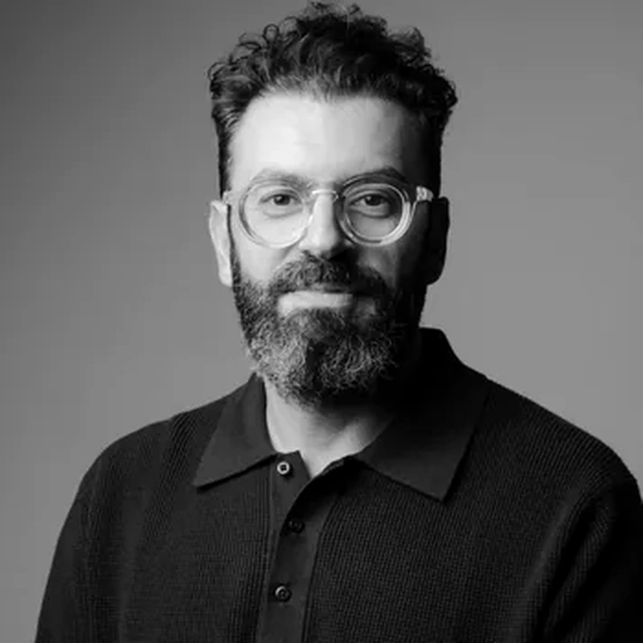

Գաղափարից՝ AI‑ով նախագիծ
Գործող PM‑ների համար՝ ինչպես արագացնել աշխատանքը AI‑ով։
Քեզ համար է
Եթե արդեն ղեկավարում ես նախագծեր, այստեղ կսովորես AI‑ը կիրառել քո աշխատանքում։
Դասընթացը նախատեսված չէ PM‑ի հիմունքները սովորելու համար։
Project Manager
Հստակ պլան, կրկնվող գործը՝ AI‑ին։
Product Manager
Հետազոտություն, առաջնահերթություն, որոշում՝ AI‑ով։
Event Manager
Միջոցառումներ՝ պլանից մինչև օր՝ AI‑ի օգնությամբ։
AI
Արագացիր AI‑ի հետ


Ուսուցիչներ
Գործող PM-ներ, ինժեներական թիմերի ղեկավարներ և փորձագետներ, որոնք դասից դաս զարգացնում են հիմնական նախագիծը։

Ռեմ Դարբինյան
AI փորձագետ, SmartClick-ի համահիմնադիր, ձեռնարկատեր և ներդրող՝ 20+ տարվա տեխնոլոգիական փորձով

Անժելա Պեդանյան
Ինժեներական թիմի ղեկավար (Engineering Manager), տեխնիկական նախագծերի կառավարող, AI դասավանդող
Արտակ Գրիգորյան
AI դասավանդող, AI-ով ուժեղացված պրոդուկտի կառավարող, պրոդուկտի գլխավոր ղեկավար (CPO)

Սերգեյ Թանթուշյան
Բիզնես հաղորդակցության և ռազմավարության դասախոս, Հայաստանի ամերիկյան համալսարան (AUA)
Արմեն Մարտիրոսյան
Հայաստանի երեխաների առողջության հիմնադրամի հիմնադիր տնօրեն, Global MedConsult-ի համահիմնադիր և գլխավոր գործադիր տնօրեն
Գևորգ Պողոսյան
AI First Mindset՝ «AI-ն առաջին հերթին» մտածելակերպի ուսուցիչ, 30+ տարվա ձեռնարկատիրական փորձ
Ծրագիր
Մոդուլ 1
01AI շրջադարձը. ինչո՞ւ պիտի 21-րդ դարի PM-ն այլ կերպ աշխատի
- Project Manager-ի փոփոխվող դերը
- AI հիմունքներ. մոդել, գործիք, ավտոմատացում և գործակալ՝ հիմնական տարբերությունները
- Գործընթացների աուդիտ՝ ինչը արագացնել, ավտոմատացնել կամ պատվիրակել AI-ին, իսկ ինչը պահել մարդու դաշտում
- AI-ի սահմանափակումները, ռիսկերը և կիրառման էթիկան
- ChatGPT
- Claude
- Gemini
- գործընթացների աուդիտ
02Քո AI աշխատանքային միջավայրը՝ կոնտեքստ և կապեր
- Նախագծի կոնտեքստային փաթեթ (Project Context Pack)՝ նպատակ, շրջանակ, դերեր, սահմանափակումներ, որոշումներ, աղբյուրներ և բառարան
- ChatGPT Work և Claude Cowork՝ փաստաթղթերի, տվյալների ու բազմաքայլ աշխատահոսքերի համար
- Մոդելային կոնտեքստի արձանագրություն (MCP) և կապակցումներ՝ Notion, Drive, էլփոստ, օրացույց…
- Օրվա ամփոփագիր և շաբաթական վերանայում՝ GTD մոտեցմամբ
- ChatGPT Work/Projects
- Claude Projects/Cowork
- Notion
- Google Workspace
- Microsoft 365
- Slack
- Teams
Մոդուլ 2
03AI գործակալներ, ավտոմատացումներ և քո AI PM աշխատանքային համակարգը
- Երբ կիրառել կանոնահեն ավտոմատացում, իսկ երբ՝ AI գործակալ
- Աշխատահոսքի քարտեզ՝ գործարկիչ, տվյալներ, կանոններ, արդյունք, բացառություն և հաստատում
- AI գործակալի նպատակ, կոնտեքստ, գործիքներ, սահմանափակումներ և ավարտի պայման
- Մարդկային հաստատում, թույլտվություններ, գործողությունների գրանցում և խափանումների կառավարում
- Make
- n8n
- Zapier
- ChatGPT Work
- Claude Cowork
- Notion
- Google Workspace
- Microsoft 365
04Նախագիծը սկսվում է խնդրից. հետազոտություն, հետադարձ կապ և որոշում
- Հնարավորությունների և լուծումների ծառ (Opportunity Solution Tree)՝ խնդրից դեպի հնարավորություններ և լուծումներ
- Խորը հետազոտություն, շուկայի ու մրցակիցների ուսումնասիրություն և աղբյուրների ստուգում
- Հարցազրույցների, հարցումների ու կարծիքների համադրում՝ թեմաներ, օրինաչափություններ և ապացույցներ
- Որոշման կանոններ՝ անել հիմա, փորձարկել, ավելացնել պլանում, դիտարկել կամ մերժել
- ChatGPT
- Claude
- Deep Research
- NotebookLM
- Google Sheets/Excel
- Notion
- հարցումների ձևաթղթեր
05AI-ով աշխատող նախագծային փաստաթղթեր՝ համառոտ նկարագրից դեպի իրատեսական պլան
- Մեկ պարբերությունից՝ նախագծի համառոտ նկարագիր, մեկէջանոց փաստաթուղթ կամ պահանջների ցանկ
- Նախագծի շրջանակ, շրջանակից դուրս կետեր և հաջողության չափանիշներ
- Վերջնարդյունքներ, առանցքային փուլեր, կախվածություններ, դերեր, ժամանակ և բյուջե
- Կապակցված փաստաթղթեր, գլխավոր վստահելի աղբյուր և փոփոխությունների գրանցամատյան
- ChatGPT Work
- Claude Cowork
- Notion
- Google Drive
- Google Sheets/Excel
- գործող PM հարթակ
06Նախագծի առողջությունը. ռիսկերից ու տվյալներից՝ նոր որոշումներ
- Արդյունքի չափանիշներ՝ ինչ չափել և ինչ անտեսել
- Ռիսկերի կառավարում՝ բացահայտում, գնահատում, արձագանք և վերահսկում
- Վաղ նախազգուշացնող ազդակներ և միտումներ
- Կարմիր/դեղին/կանաչ կարգավիճակ, ղեկավար ամփոփագիր և որոշման հուշագիր
- ChatGPT Work
- Claude Cowork
- Google Sheets/Excel
- Notion
Մոդուլ 3
07Մարդիկ են շարժում նախագծերը. ազդեցություն առանց պաշտոնական իշխանության
- Ինչպես միավորել մարդկանց ընդհանուր նպատակի շուրջ, երբ նրանց ղեկավարը չես
- Շահակիցների քարտեզ, սպասումներ և վստահություն
- Թիմում AI-ի ընդունում՝ անհանգստություն, դիմադրություն և աշխատանքի նոր կանոններ
- Դժվար հաղորդագրություններ ու բանակցություններ՝ խնդիր բարձրացնել, շրջանակ փոխել և «ոչ» ասել
- ChatGPT
- Claude
- Notion
- Gmail/Outlook
- Docs
 Zoom/Meet/Teams-ի տեքստային վերծանում
Zoom/Meet/Teams-ի տեքստային վերծանում
08Փորձագետների մաստերքլաս. հաջողված ու ձախողված նախագծեր
- Հաջողված և ձախողված նախագծերի դեպքերի ուսումնասիրություն
- Որ որոշումները, պայմաններն ու ազդակները դարձան հաջողության կամ ձախողման հիմք
- Ինչպես վերականգնվել ձախողումից հետո և վերակառուցել թիմի ու շահակիցների վստահությունը
- Նախագծի ներկայացման տրամաբանություն՝ խնդիր, ապացույց, լուծում, արժեք, պլան, ռիսկեր և հաջորդ քայլ
- Իրական նախագծային նյութեր
- ներկայացման ձևանմուշ
- AI PM համակարգի ստուգաթերթ
Հաճախ տրվող հարցեր
Պետք է արդյոք նախագծերի կառավարման նախնական փորձ
Դասընթացը PM-ի հիմունքներ չի սովորեցնում։
Սկսնակ PM-ները մինչև մեկնարկը ստանում են կարճ մեկնարկային փաթեթ, որպեսզի հեշտ հետևեն գործնական օրինակներին, իսկ կառավարման փորձ ունեցողների համար հոսքը կիրառելի է անմիջապես։
Ինչպե՞ս է կառուցված յուրաքանչյուր դասը
Դասը տևում է երկու ժամ և ներառում է 10-րոպեանոց դադար ու չորս 5-րոպեանոց հարցուպատասխան։
Գործիքները ցուցադրվում են իրական ժամանակում՝ քայլ առ քայլ, որպեսզի տեսնես ոչ միայն արդյունքը, այլև ամբողջ ընթացքը։
Ի՞նչ են Soft Lab-երը և գնահատվու՞մ են
Soft Lab-երը յուրաքանչյուր դասից հետո տրվող գործնական առաջադրանքներ են սեփական նախագծի վրա։
Դրանք չեն գնահատվում, իսկ AI ուսուցչի օգնականը տալիս է ուղղորդող հետադարձ կապ, որպեսզի հասկանաս՝ ինչ բարելավել։
Ո՞ւմ համար է նախատեսված դասընթացը
Նախագծեր, պրոդուկտներ, ծրագրեր և գործառնական գործընթացներ կառավարող մասնագետների համար՝ անկախ ոլորտից։
Հիմնական հոսքը կիրառելի է ամենուր, իսկ ծրագրային պրոդուկտներ վարողների համար կան ընտրովի IT-խորացումներ։
AI-ը կփոխարինի՞ կառավարողի որոշումներին
Ոչ։ Հիմնական սկզբունքը մեկն է՝ AI-ը մշակում և առաջարկում է, դու՝ կառավարողդ, ստուգում և որոշում ես։
Ամեն կարևոր արդյունք անցնում է մարդկային հաստատման կետով։
Ի՞նչ գործիքներ են պետք և արժե՞ն գումար
Գործիքների ցանկը տրվում է հնարավորությունների և հասանելիության նշումներով։
Մեծ մասն ունի անվճար փաթեթ, և դասընթացի ընթացքում ցույց ենք տալիս, թե որտեղ է վճարովի տարբերակը իրական տարբերություն տալիս։
Ի՞նչ եմ ստանում ավարտին
Փաստաթղթավորված AI PM աշխատանքային համակարգ՝ կոնտեքստային փաթեթ, նախագծային փաստաթղթեր, վիճակի հաշվետվություն, ավտոմատացում, AI գործակալ կամ նախատիպ, Prompt գրադարան և SOP-ներ, ինչպես նաև 30-օրյա ներդրման պլան։
Գրանցվիր դասընթացին
Լրացրու անունդ և կապի տվյալները։
Դասընթացը մեկնարկում է նոյեմբերի 4։
Հարց ունե՞ս
Դասընթացի և վճարման հարցերով կարող ես դիմել կազմակերպիչներից ցանկացածին։